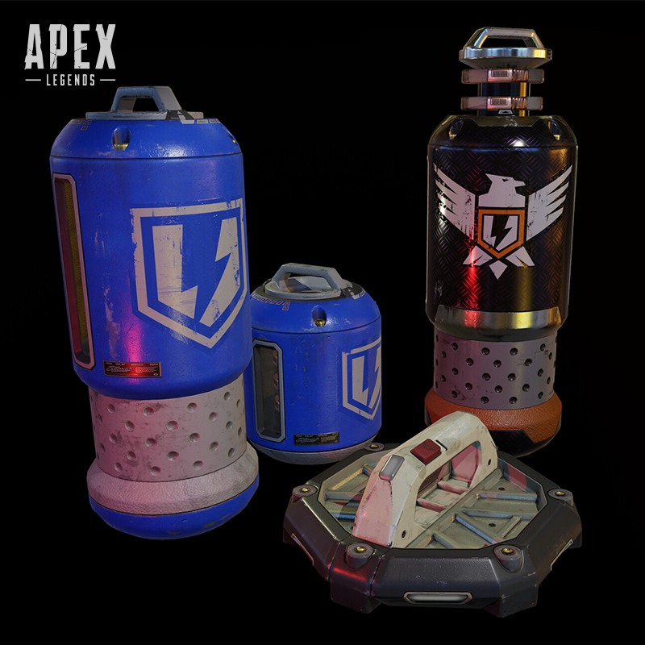

MODOS DE JOGO
BATTLE ROYALE
Mapas enormes. Partidas de 60 pessoas. Um Anel cada vez menor. O seu esquadrão vai vencer?
FIQUE DENTRO DO ANEL
O Anel está sempre fechando e você não vai durar muito lá fora. À medida que o Anel ficar menor, você será forçado a mais encontros com os esquadrões restantes. Então certifique-se de ter o equipamento certo para destruí-los.
PEGUE SEUS ESPÓLIOS
Você vai entrar com equipamento básico. Explore o mapa - e Caixas de Abate de inimigos no chão - para encontrar equipamentos melhores. Se você vai sobreviver, vai precisar.
O ÚLTIMO ESQUADRÃO VIVO
Seja em Duos ou Trios, o objetivo é o mesmo: ser o último esquadrão vivo. Mas a morte nem sempre é permanente. Mantenha seu esquadrão na luta com a ajuda de sinalizadores de ressurgimento.

MATA-MATA EM EQUIPE
Jogue uma partida 6x6 marcando pontos ao eliminar seus oponentes. A primeira equipe a marcar 50 pontos leva a partida!
MARQUE PONTOS
Modalidade na qual duas equipes de seis jogadores se enfrentam em quatro mapas aleatórios. Sempre que um grupo a obtiver 30 pontos, por meio da eliminação do time rival trinta vezes seguidas, a vitória está garantida.
NÃO SEJA ELIMINADO
Um novo sistema de Partidas Orientadas é criar um ambiente mais amistoso para que jogos jogadores consigam entender melhor o jogo sem ser eliminado rapidamente por um jogador experiente.
CONTROLE
Jogue batalhas de 9x9 e junte-se para dominar tudo e capturar pontos de controle no mapa, com ressurgimentos infinitos que mantêm a ação rolando.
CURIOSIDADES
Estará DISPONÍVEL por tempo limitado, mas pode acabar como uma adição permanente ao jogo, dependendo da recepção dos fãs.
Transformar o Controle em um modo permanente é “algo que podemos explorar no futuro”, disse o designer de jogos, David Swieczko, em uma entrevista coletiva no início desta semana. “A decisão é mantê-lo como um modo por tempo limitado por enquanto. É uma maneira muito diferente de jogar Apex, adoramos e nos divertimos muito com isso internamente. Nós realmente queremos ver qual é o feedback dos jogadores e como eles se envolvem com isso.”
GANHE PONTOS
O Controle, por outro lado, tem uma escala muito maior, com um novo cenário de nove contra nove e mecânicas que realmente não se encaixam no formato battle royale, como ganhar pontos por zonas de captura e ressurgimentos infinitos.
CORRIDA DE ARMAS
Enfrente três outros esquadrões, fazendo eliminações com uma lista de 25 armas. Consiga uma eliminação com uma Faca de Arremesso para vencer!
NOVO MODO
Enfrente uma experiência de explosão rápida e em ritmo acelerado contra três outros esquadrões e obtenha abates para ascender por uma trilha de 25 armas. A Corrida de Armas chega na Cidade Caveira original do Desfiladeiro do Rei e Fragmento Leste do Confins do Mundo.
ESCOLHA A MELHOR ARMA
As armas estão clasificadas em grupos: Fuzis de assalto, Fuzis de precisão, Armas de atirador, Metralhadoras leves, Submetralhadoras, Escopetas e Pistolas

COMBINE AS HABILIDADES
Combinar habilidades das lendas no jogo Apex Legends pode oferecer várias vantagens estratégicas e táticas. Cada lenda possui habilidades únicas que podem ser complementares quando utilizadas em conjunto.
Por exemplo, a habilidade de rastreamento do Bloodhound pode ser combinada com a capacidade de silenciamento do Wraith para criar emboscadas surpresa. Enquanto o Bloodhound rastreia os inimigos, o Wraith pode utilizar sua habilidade de se tornar invulnerável e silenciar os oponentes, permitindo que a equipe se aproxime sem ser detectada.
Essa sinergia entre as habilidades das lendas pode garantir uma vantagem tática significativa, especialmente em situações de combate em equipe.

SUPRIMENTOS
Os Medkits são itens de cura valiosos em Apex Legends, fornecendo uma cura substancial de pontos de vida. Eles são essenciais para a sobrevivência em momentos de combate intenso ou para a recuperação rápida de um membro da equipe. Os jogadores devem gerenciar estrategicamente seus suprimentos de Medkit, buscando-os em locais estratégicos e garantindo que tenham uma quantidade adequada em seus inventários para enfrentar situações críticas. Ter Medkits suficientes pode ser a diferença entre a vida e a morte durante as partidas.